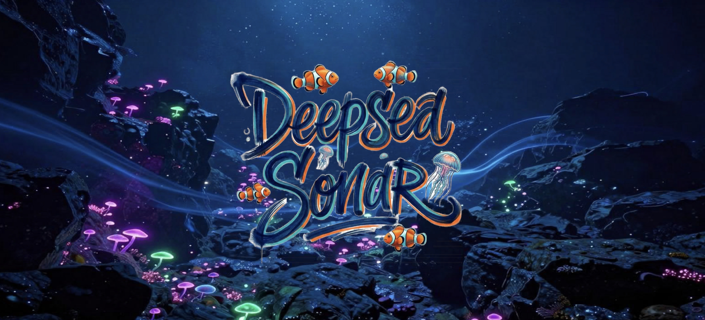
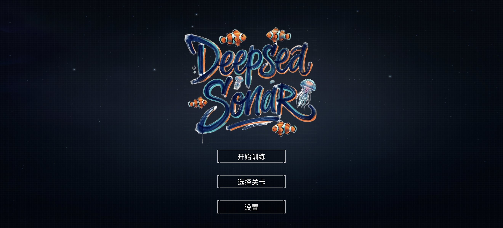
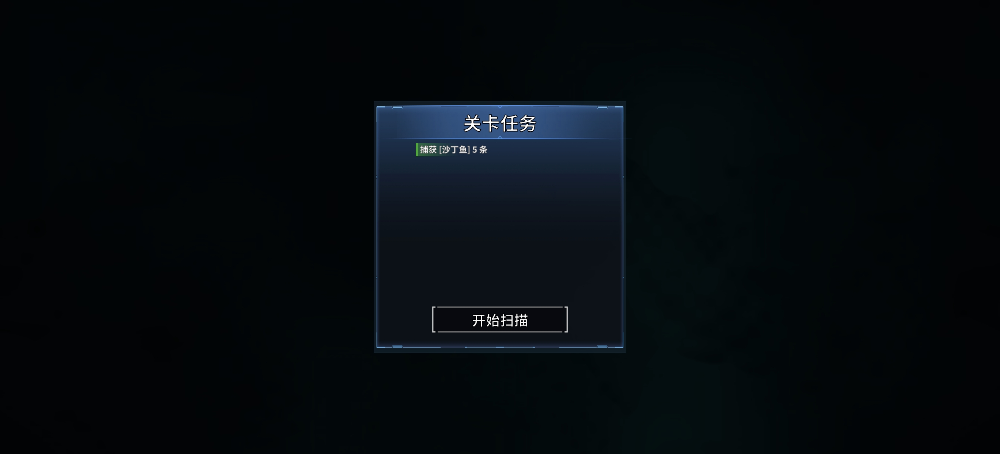
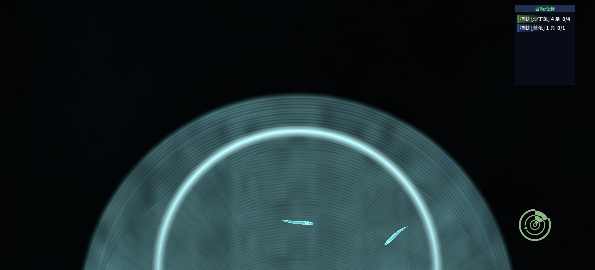
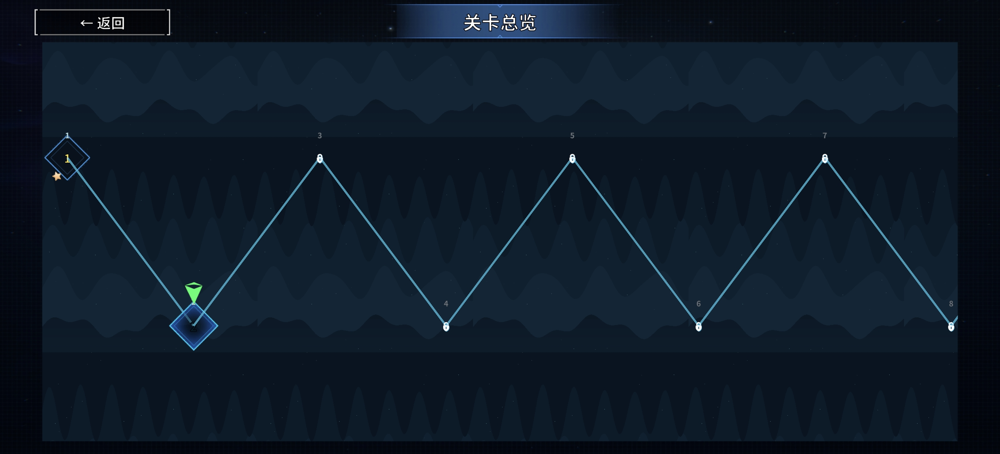
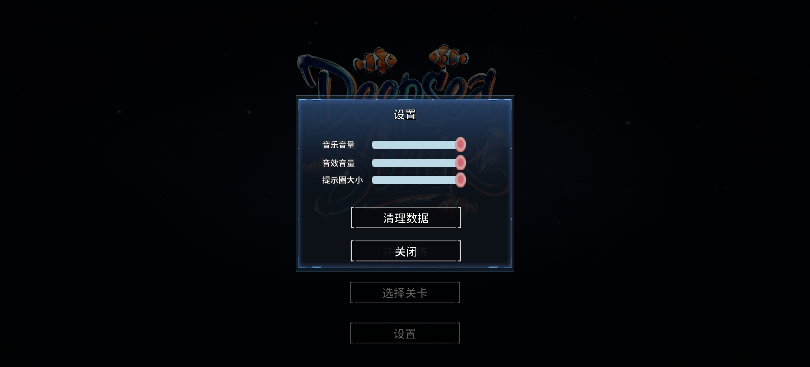

深 海 声 呐 员
DEEP SEA SONAR
安卓 横屏 · 声呐扫描训练游戏
游戏简介
驾驶声呐船驶入深海，用声呐波扫描漆黑的海底，在密密麻麻的回声中找到任务卡指定的目标生物。
扫描光经过的一瞬间，你必须快速判断、点按并短暂按住正确目标——抓住它，忽略外形相近的干扰物，
绝不触碰受保护的海洋生物与危险的沉船残骸。
训练目标
- 选择性注意 — 从大量相似回声里锁定目标任务
- 抗干扰 — 排除外形相近的干扰目标与视觉杂波
- 反应抑制 — 忍住不点击保护生物与危险残骸
专注操作会为「清晰声波」充能，激活后可加快扫描频率、扩大扫描半径，但选择永远掌握在你自己手中。
玩法特色
- 真实声呐表现：扫描波点亮海底，回声随海床移动并逐渐消散
- 十余种海洋生物：沙丁鱼、蓝龟、天使鱼、暗沙丁鱼、珍稀沙丁鱼…
- 移动目标、变向游动、乌贼式突进，难度逐关推进
- 完整星级评价：命中率、误触率、平均反应时间、连续正确次数
- 关卡地图探索 + 金币星级奖励，10 个由浅入深的关卡
- 横屏自适应 UI，16:9 / 4:3 全面屏均适配
游戏截图

启动画面

主菜单

任务卡

关卡内 · 声呐扫描

选关地图

设置